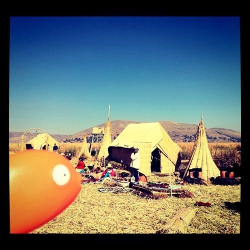

Mon, 22 Nov 2010 08:25:40 · Rango · Peru · travel · photography · scene · Lake Titicaca
Mr. Timms in Lake Titicaca, Peru

Mr. Timms from Rango visiting La Isla de Los Uros, in Lake Titicaca, Peru.
Mon, 22 Nov 2010 08:25:40 · Rango · Peru · travel · photography · scene · Lake Titicaca

Mr. Timms from Rango visiting La Isla de Los Uros, in Lake Titicaca, Peru.